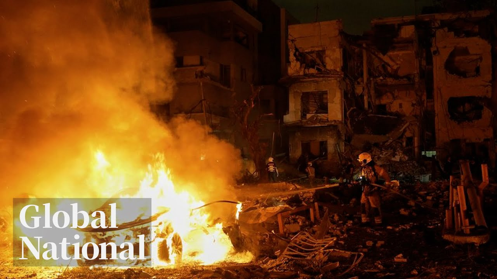

【优质全球新闻节目：Global News｜以伊互相指控战争罪行，暴力持续升级｜2025年6月17日】
Summary: The Israel-Iran conflict escalated sharply on Tuesday night, with new attacks, fiery rhetoric from the U.S. President, and signs of possible American involvement. Tragedy in Gaza: Palestinians collecting food were massacred. Canada pledges billions more in aid to Ukraine, with Prime Minister Carney making the commitment. The mystery of a missing three-year-old girl in Quebec and the charges faced by her mother. Major data breach at 23andMe: a complete failure in protecting user privacy.
摘要： 以伊冲突周二夜间急剧升级，新袭击、美国总统激烈言辞及美国可能介入迹象。加沙惨剧：领取食物的巴勒斯坦人遭屠杀。加拿大承诺追加数十亿援乌资金，卡尼总理作出承诺。魁北克三岁女童失踪谜案与其母面临的指控。23andMe重大数据泄露：用户隐私保护彻底失败。

⏱️ Estimated Reading Time: 32 min
📚 六级生词 📚 雅思生词 📚 托福生词 📚 专八生词 📚 SAT生词 📚 考研生词 📚 GRE生词 📚 高考生词
The intensifying war between Israel and Iran this Tuesday night.
周二夜间以色列与伊朗冲突激化。
The fresh attacks, the US president's escalating rhetoric, and signs the US is poised to get involved.
新一轮袭击、美国总统升级的言论以及美国可能介入的迹象。
Horror in Gaza, the massacre of Palestinians trying to get food.
加沙惨剧：试图获取食物的巴勒斯坦人遭屠杀。
Help for Ukraine.
援乌行动。
Canada pledges billions more in aid.
加拿大承诺追加数十亿援助。
and the promise Prime Minister Carney made.
卡尼总理作出的承诺。
Mystery in Quebec, the disappearance of a three-year-old girl and the charges against her mother.
魁北克悬案：三岁女童失踪与其母面临的指控。
Plus, delicate data exposed.
敏感数据泄露。
And I said, "No, that's not it can't be true."
我惊呼："不，这不可能"。
23 andMe's profound failures to protect customers privacy.
23andMe在保护用户隐私方面的重大失职。
Global National with Donna Fzen reporting tonight from B Alberta.
全球国家，唐娜·弗雷森今晚从阿尔伯塔省班夫发回报道。
We are in Alberta's Rocky Mountains where the G7 summit of world leaders has been overshadowed by events in the Middle East.
我们身处阿尔伯塔落基山脉，G7峰会因中东事件黯然失色。
Good evening and thanks for joining us.
晚上好，感谢收看。
This G7 meeting was suddenly reduced to G6 last night as President Trump left early to fly back to Washington.
昨夜特朗普提前返美，G7骤降G6。
On Air Force One, Trump told reporters he's not looking for a ceasefire between Israel and Iran, but what he called a real end.
空军一号上特朗普向记者表示不寻求停火，而要"彻底终结"。
And later he posted, "We now have complete and total control of the skies over Iran."
随后他发文宣称"已完全掌控伊朗领空"。
He threatened Iran's Ayatollah, saying, "We know exactly where the so-called Supreme Leader is hiding.
他威胁伊朗最高领袖："我们清楚其藏身之处"。
He is an easy target."
"这是个简单目标"。
President Trump then escalated his rhetoric, calling for Iran's unconditional surrender.
特朗普升级言论要求伊朗无条件投降。
We'll go to Washington for where all of this is headed in just a moment, but we begin in Jerusalem and the situation on the ground.
稍后将转向华盛顿，首先关注耶路撒冷实地局势。
Mike Armstrong is there for us tonight.
迈克·阿姆斯特朗在现场报道。
Mike.
迈克。
Well, Donna, most of the missiles fired at Israel since this conflict began came during the nighttime.
唐娜，冲突爆发后多数导弹在夜间袭以。
Today, it was both midm morning and midafternoon.
今日袭击发生在上午和午后。
[Music]
[音乐]
Multiple missiles were seen in the skies over Israel just before 9:00 a.m. both in Tel Aviv and Jerusalem.
今晨9点前，特拉维夫和耶路撒冷上空出现多枚导弹。
Most appeared to be shot down by Israeli defenses, but not all.
多数被拦截，但非全部。
This was north of Tel Aviv.
这次发生在特拉维夫北部。
Officials say a bus terminal was hit.
官员称公交枢纽遇袭。
There were no casualties.
无人员伤亡。
The Israeli military released video Tuesday of an F-15 fighter jet taking off.
以军周二发布F-15战机起飞视频。
It says to strike targets in Iran.
称将打击伊朗目标。
It also released images, it says, of an Iranian drone being shot down, one of more than 30 intercepted overnight.
另发布击落伊朗无人机影像，称昨夜拦截超30架。
Israel's foreign minister visited a site damaged by a strike Saturday where two people were killed.
以外长视察周六遭袭致两人死亡的现场。
There is a difference in how the two countries are fighting.
指出两国作战方式差异。
He says, insisting Israel is targeting military sites while Iran is committing war crimes.
坚称以方打击军事目标，伊朗犯战争罪。
They are targeting only civilians.
伊方仅针对平民。
You cannot find even one soldier.
"找不到一名士兵"。
The Iranian side is also releasing images of its own weapons and making its own accusations.
伊朗也发布武器影像并提出指控。
An Iranian state TV anchor was knocked off the air by a strike Monday in Thyron.
周一德黑兰空袭致伊朗国家电视台主播中断播报。
Tuesday, a reporter walked through the building showing the damage to viewers.
周二记者带观众查看建筑损毁。
Foreign Ministry spokesman called the attack on the broadcaster a wicked act and a war crime.
外交部发言人谴责袭击媒体是邪恶行径和战争罪。
Israel says it warned people in the neighborhood before the strike to leave.
以方称空袭前已警告居民撤离。
The two sides are also exchanging threats.
双方持续互相威胁。
An Iranian army commander said Tuesday the operations so far have been deterrence and promised punitive actions soon.
伊朗指挥官称当前行动属威慑，将很快实施惩罚。
While the Israeli military had a warning for a specific Iranian official Tuesday, it said it has eliminated the most senior military commander of the Iranian regime.
以军警告特定伊朗官员，称已消灭伊政权最高军事指挥官。
It took out the previous commander 4 days ago and now his replacement.
四天前击杀前任指挥官，现又消灭继任者。
The Israeli foreign minister says he doesn't know who's going to take over that position next, but he says if someone's offered the position, they should be extremely cautious.
以外长表示不知下任人选，但警告接任者需极度谨慎。
It will make them a target as well.
"这将使其成为目标"。
Donna Mike Armstrong in Jerusalem.
唐娜，耶路撒冷的迈克·阿姆斯特朗。
Thanks, Mike.
谢谢迈克。
What role is the US playing in all of this?
美国扮演何种角色？
Well, just last week, talks between the US and Iran on Iran's nuclear program were still underway.
上周美伊核谈仍在进行。
Now, everything has changed.
如今局势剧变。
There is no more talking, only threatening rhetoric, which suggests the US may be preparing to come to Israel's defense or even join Israel in direct attacks on Iran.
谈判终止，威胁言论暗示美国或准备援以甚至联合攻伊。
Jackson Prosco is following this for us from Washington.
杰克逊·普罗斯科华盛顿追踪报道。
Jackson.
杰克逊。
Well, Donna, Trump spent much of the afternoon hunkered down with advisers in the White House situation room after that early exit from the G7.
唐娜，特朗普提前离开G7后，下午多在白宫战情室与顾问商讨。
While we haven't heard from him directly, there is plenty to suggest that Trump may have already reached a decision.
虽未直接表态，诸多迹象显示其或已做决定。
His online post range from demanding the unconditional surrender of Iran to claiming to know where Iran's supreme leader is.
其发文内容从要求伊朗无条件投降到宣称知晓最高领袖行踪。
But there's a lot of focus on Trump's post saying, quote, "We have complete and total control of the skies over Iran."
但最受关注的是"完全掌控伊朗领空"的宣言。
Because that raises the question of whether that means the US is already directly involved somehow.
这引发美国是否已直接介入的疑问。
Listen to how Trump explained what he's after on the flight back to Washington early this morning.
今晨返航途中特朗普解释其目标：
Right now, we're doing pretty well.
"目前进展顺利"。
Remember, Iran cannot have a nuclear weapon.
"记住伊朗不能拥核"。
It's very simple.
"很简单"。
You don't have to go too deep into it.
"无需深究"。
They just can't have a nuclear weapon.
"他们就是不能拥核"。
What what specifically is better than a ceasefire?
"比停火更好的是什么？"
What are you looking for here?
"你追求什么？"
An end.
"终结"。
A real end, not a ceasefire.
"真正的终结，非停火"。
An end.
"终结"。
So something that would be positive.
"积极的结果"。
Yeah.
"对"。
Or or uh giving up entirely.
"或彻底投降"。
So Jackson, what steps is the US already taking to prepare for the possibility of a wider conflict?
杰克逊，美国为可能扩大的冲突做了哪些准备？
Well, we know from the Pentagon that the US is moving additional fighter jets to the region tonight, though for now they insist they are for defensive purposes.
五角大楼证实美军正向该地区增派战机，目前坚称属防御性质。
But we should point out that these include F-35s, the most advanced fighter the US has.
需指出其中包括最先进的F-35战机。
The US State Department has also established a task force to help Americans leave Israel and the broader Middle East.
国务院成立工作组协助在以及中东美国人撤离。
One big sign to watch for as to how this is all progressing is whether or not the US deploys its B2 stealth bombers to the region.
关键观察点是会否部署B2隐形轰炸机。
Those are the only aircraft capable of delivering the gigantic bunker buster bombs that could strike at the heart of Iran's nuclear program which is buried deep underground.
这是唯一能投掷巨型钻地弹打击伊朗地下核设施的机型。
Donna.
唐娜。
Okay, Jackson in Washington.
华盛顿的杰克逊。
Thank you.
谢谢。
Israel is still engaged in a war on another front, Gaza.
以色列在加沙战线持续作战。
The latest attack hit crowds of Palestinians waiting for humanitarian aid.
最新袭击针对等待人道援助的巴勒斯坦人群。
These images show the horror after Israeli forces fired on civilians.
影像显示以军开火后的惨状。
More than 50 people have been killed and medical staff treating the severely injured say more will likely die.
超50人死亡，医护人员称重伤者恐难存活。
The UN human rights chief accuses Israel of weaponizing food.
联合国人权高专谴责以方将食物武器化。
Almost all the casualties in Gaza in recent days have been linked to the delivery of aid rather than Israeli strikes on Hamas targets.
近日加沙伤亡多与援助分发相关，非以军打击哈马斯目标所致。
Redmond Shannon reports.
雷德蒙·香农报道。
And a warning, the images are disturbing.
警告：以下画面可能引起不适。
[Applause]
[掌声]
Much of the screen needs to be blurred just to broadcast this footage.
部分画面需打码播出。
The video shows at least 10, perhaps 15 bodies.
视频显示至少10-15具遗体。
Many horrifically wounded.
多数伤势骇人。
The latest mass killing in Gaza in a place where people were simply trying to get food.
加沙最新屠杀发生在民众领取食物地点。
At Nasser Hospital, there was chaos.
纳赛尔医院陷入混乱。
Those who came to help unable to block out what they have seen.
救助者难以忘却所见惨状。
It's a massacre.
"这是屠杀"。
Young children, mothers massacred.
"孩童、母亲遭屠杀"。
What is the situation we are living in?
"我们活在什么世道？"
Witnesses say a crowd had gathered to get flour.
目击者称人群聚集领取面粉。
And as they were allowed to move forward, they were fired on by drones and a tank.
当被允许前进时，遭无人机和坦克攻击。
Their bodies are cut up.
"遗体支离破碎"。
This is not permissible.
"不可接受"。
Aren't we human beings?
"我们不是人类吗？"
Israel's Defense Forces says it is aware of reports regarding a number of injured individuals from IDF fire following the crowd's approach.
以国防军称知悉关于人群接近后遭以军火力致伤的报告。
The details of the incident are under review.
事件细节正在调查。
[Music]
[音乐]
Gaza's Hamas Health Ministry says almost 400 people have been killed trying to get aid since late last month alone.
加沙卫生部门称仅上月底以来近400人因获取援助丧生。
Many, but not all of the incidents have been near the privately run Israeli approved aid hubs.
多数事件发生在以方批准的私营援助中心附近。
Humanitarian groups and the United Nations say the scheme does not fulfill humanitarian principles.
人道组织与联合国指该模式违背人道原则。
There's a constant correlation with the positions of the four announced uh food distribution spots all along the strip and the mass casualty incidents.
四条食物分发线与大规模伤亡事件持续关联。
Gazins are faced with a daily choice of going hungry or risking their lives to eat.
加沙民众每日面临挨饿或冒死觅食的选择。
Redmond Shannon Global News London.
雷德蒙·香农，全球新闻伦敦报道。
[Music]
[音乐]
Russia attacked Ukraine overnight, killing at least 15 people and injuring over 156 others.
俄军夜袭乌克兰致至少15死156伤。
For close to 9 hours, Russia launched more than 440 drones and 32 missiles, most of them targeting the Ukrainian capital.
近9小时内俄发射超440架无人机和32枚导弹，多数瞄准乌首都。
It was the deadliest strike on Kev this year.
系基辅今年遭遇的最致命袭击。
Many of the people killed were in a n-story residential building hit by a ballistic missile.
多数死者位于遭弹道导弹击中的居民楼。
The future of Ukraine is on the agenda at the G7 summit here in Alberta.
乌克兰未来列入G7峰会议程。
Prime Minister Mark Carney told Ukraine's president maximum pressure is needed on Russia.
卡尼总理告知乌总统需对俄施加最大压力。
And today he pledged more military support along with more sanctions on Russia.
今日承诺追加军事援助及对俄制裁。
European leaders see Russia as a direct threat to their security and believe more needs to be done to pressure Moscow.
欧洲领袖视俄为安全直接威胁，认为需加大施压。
But the US president, who claimed when he was elected he'd get a deal done on Ukraine within a day, is now backing away from being involved.
但曾宣称当选后一日内解决乌克兰问题的美国总统现正抽身。
So what did Ukraine's leader accomplish here?
乌总统此行取得何成果？
David Aken is at the summit.
大卫·阿肯峰会现场报道。
David.
大卫。
Well, Donna, as the G7 host, Prime Minister Mark Carney has the power to shape the agenda.
唐娜，作为东道主，卡尼总理可主导议程。
And today he focused the G7's attention on the war in Ukraine.
今日其将G7焦点引向乌克兰战争。
He invited Ukrainian President Vladimir Zalinski to the summit and announced a major new aid package.
邀请泽连斯基总统与会并宣布重大新援助计划。
We are providing additional military assistance uh drones, helicopters, broader munitions, um over $2 billion uh worth of assistance directly to Ukraine.
"我们追加无人机、直升机、弹药等超20亿美元军援直送乌克兰"。
Canada is also providing Ukraine with a $2.3 billion loan.
加方另提供23亿美元贷款。
Canada will be repaid using the interest earned on frozen Russian assets.
还款来源为冻结俄资产产生的利息。
Canada will also sanction 200 ships, part of the so-called shadow fleet of tankers and cargo ships Russia uses to evade sanctions.
还将制裁200艘俄用于规避制裁的"影子舰队"油轮货船。
We uh need support from our allies.
"我们需要盟友支持"。
And I'm here and thank you for the military package.
"感谢军事援助计划"。
It's important for our soldiers to be strong at the battlefield, to stay strong until Russia will be ready for the peace negotiations.
"对士兵战场坚持直至俄方愿和谈至关重要"。
And to be absolutely clear, uh the support will be unwavering until we get a just peace for Ukraine, Ukrainian people.
"明确表态：支持将坚定不移直至乌人民获得公正和平"。
And Canada's support along with this latest aid is timely coming the day after Russia's massive overnight attack.
加拿大最新援助恰逢俄军大规模夜袭次日。
We had Ukrainians had our families had very difficult nights one of the biggest attack from the very beginning of this war.
"乌克兰家庭经历开战以来最艰难夜晚之一"。
Though Donald Trump left the summit site Monday, Carney gathered all the other leaders to meet with Zalinski.
尽管特朗普周一离会，卡尼仍召集其他领袖与泽连斯基会晤。
And yet no joint statement was issued about Ukraine.
但未发表关于乌克兰的联合声明。
Carney also met with one of the most controversial guests at this summit, the prime minister of India, Narendra Modi.
卡尼还会晤最具争议的客人——印度总理莫迪。
Controversial of course because agents of Mod's government stand accused of being involved in the 2023 murder of a sick activist in Suriri, BC.
争议源于莫迪政府特工被指控参与2023年BC省苏里里市一名患病活动人士的谋杀案。
That was David Aken reporting from Canonascus.
这是大卫·阿肯从卡农纳斯卡斯发回的报道。
Late today, the prime minister had a final news conference.
今天晚些时候，总理举行了最后一次新闻发布会。
Mark Carney said he believes the meeting begins a new era of cooperation that promotes long-term resilience over short-term efficiency. on trade.
马克·卡尼表示此次会晤开启了以长期韧性替代短期效率的贸易合作新时代。
He said he and President Trump agreed to pursue negotiations and Carney intends to intensify those talks to reach a deal within 30 days.
他称与特朗普总统同意推进谈判，并计划在30天内加紧磋商以达成协议。
Carney condemned transnational repression but he praised India's prime minister who he invited to these talks and agreed to restore full diplomatic services between the two countries.
卡尼谴责跨国镇压行为，同时赞扬受邀参会的印度总理，双方同意恢复全面外交关系。
And this is what the prime minister said when asked about the murder of Canadian sick activist Hardep Singh Nijer.
以下是总理被问及加拿大患病活动人士哈迪普·辛格·尼杰尔谋杀案时的回应。
We have had a discussion uh the prime minister and I about the importance of having the law enforcement to law enforcement dialogue which is uh coop not just dialogue cooperation uh directly uh the importance of addressing transnational repression uh as um uh as as as I noted including uh when we met um and u obviously there is a judicial process that's underway and I need to be careful about further comments.
我们讨论了执法部门直接合作（不仅是对话）的重要性，以及解决跨国镇压问题的必要性。鉴于司法程序正在进行，我需谨慎评论。
A desperate search in Quebec.
魁北克展开紧急搜寻。
Coming up, a three-year-old hasn't been seen in more than two days.
接下来：一名三岁幼童已失踪超两天。
The charges her mother faces.
其母面临的指控。
You're looking at Mount Rundle towering over Vermilion Lakes just outside B.
您看到的是班夫城外巍然耸立的朗德尔山与朱砂湖。
We're back from Alberta in a moment.
稍后我们将从阿尔伯塔省继续报道。
In Quebec, the mother of a missing three-year-old girl is in police custody tonight.
魁北克失踪三岁女童的母亲今晚被警方拘留。
The 34year-old has been charged with child abandonment.
这名34岁女性被控遗弃儿童罪。
Her young daughter hasn't been seen since Sunday morning.
其幼女自周日早晨起失踪。
A large police search is still underway.
大规模搜救行动仍在进行。
Global's Dan Spectre is just outside Montreal tonight.
环球新闻的丹·斯佩克特正在蒙特利尔郊外。
Dan, bring us up to up to speed.
丹，请介绍最新进展。
Donna, it's a case that has cast a cloud of dread over the entire province.
唐娜，这起案件给全省蒙上恐惧阴影。
3-year-old Claire Bell has brown hair, brown eyes, stands just under a meter tall.
三岁的克莱尔·贝尔有着棕发棕眼，身高不足一米。
And this morning, many became aware of a haunting new video of her in the arms of her mother, 34year-old Rachel Todd.
今晨流传出一段令人不安的视频，显示她被34岁的母亲瑞秋·托德抱在怀中。
You try that again and this is going to get ugly.
"你再这样事情会变得很难看。"
Todd posted that on Tik Tok just hours before Claire was last seen.
托德在克莱尔失踪前数小时于抖音发布该内容。
The caption, "Have you ever faced a mother who has nothing left to lose?"
配文写道："你见过走投无路的母亲吗？"
The mother and daughter were seen in Montreal's Lasal Burough where they reside Sunday at 9:45 in the morning.
周日早9:45，母女曾出现在其居住的蒙特利尔拉萨尔区。
Then in the afternoon, Todd walked into a souvenir shop 50 kilometers west saying she had lost her daughter.
当日下午，托德走进西边50公里处的纪念品店称女儿走失。
After several hours of interrogation, Todd was arrested on Monday night.
经数小时审讯，托德于周一晚被捕。
She is now charged with child abandonment with likelihood of causing permanent injury.
她现被控可能造成永久伤害的遗弃儿童罪。
We want to find the girl quickly.
我们希望尽快找到女孩。
So, we put uh many resources to find the girl as soon as possible.
因此投入大量资源展开搜救。
This is uh this is hard because we have a large area.
搜救难度很大，因为区域广阔。
Police and volunteers have been focusing their efforts near the location Claire's brown Chihuahua was found dead on the side of the road Monday afternoon.
警方与志愿者重点搜索周一午后发现克莱尔的棕色吉娃娃陈尸路边的区域。
Teams are combing through the tall grass bordering area highways across a very large perimeter.
队伍正在高速公路旁高草丛中进行大范围拉网式搜索。
Helicopters, ATVs, and drones continue to be deployed.
直升机、全地形车和无人机持续投入搜寻。
Authorities are inviting anyone who saw the mother's 2007 Silver Ford Escape with a baby on board sticker on it Sunday to call them.
当局呼吁周日见过贴有"车内有婴儿"标签的2007款银色福特翼虎者提供线索。
Rachel Todd has no criminal history and no psychiatric evaluation has been ordered yet.
瑞秋·托德无犯罪记录，目前未要求精神评估。
Meanwhile, police have ordered local municipalities to pause garbage collection as they continue their search for Clarabel.
警方要求暂停垃圾清运以配合搜寻克拉拉贝尔。
Donna, such a sad story.
唐娜，这真是个悲伤的故事。
Dan Spectre near Montreal. Thanks.
蒙特利尔郊外的丹·斯佩克特报道。谢谢。
Ahead, cautionary tale.
接下来：警示事件。
What opened the door to a huge data breach at a DNA testing company?
DNA检测公司如何酿成重大数据泄露？
This is the stunning Canonascis Valley in the Alberta Rockies.
这里是阿尔伯塔落基山脉壮丽的卡农纳斯卡斯谷。
We're back in a moment.
稍后继续。
[Music]
[音乐]
A popular DNA testing company that is now bankrupt has been fined for failing to protect the sensitive genetic data of millions of users, including more than 300,000 Canadians.
某破产DNA检测公司因未能保护数百万用户（含30万加拿大人）的敏感基因数据被罚款。
Canadian and British privacy commissioners say 23 andMe had inadequate security and was slow to act before a major cyber attack in 2023.
加英隐私专员指出23andMe在2023年网络攻击前安全措施不足且反应迟缓。
Nitu Garcho spoke with one of the victims of the breach.
尼图·加乔采访了数据泄露受害者之一。
We have agreed to protect her identity out of concern for her safety and privacy.
出于安全隐私考虑，我们隐去其身份信息。
Millions of people sent in their saliva kits to 23 andMe hoping to trace family histories, but it took a dark turn with a massive data breach in 2023.
数百万人向23andMe寄送唾液检测盒追溯家族史，但2023年大规模数据泄露使事态恶化。
A secure private place to and now a joint Canada UK investigation has found the company failed to take basic steps like multiffactor authentication and strong minimum password protections.
加英联合调查发现该公司未采取多因素认证等基本防护措施。
A cautionary tale for all organizations, says Canada's privacy watchdog.
加拿大隐私专员称此为对所有机构的警示。
We were also concerned to find that the stolen data was later offered for sale online.
失窃数据被挂网出售令我们担忧。
Canada doesn't have the power to levy fines, but the UK does, slapping the company with a more than $4.2 million penalty.
加拿大无权罚款，但英国对公司处以逾420万英镑罚金。
People affected by this breach told us that they felt anxious about what it could mean to their personal, financial, and family safety.
受影响者表示担忧其个人、财务及家庭安全。
Among them is a Canadian who spoke with us on condition of anonymity, saying the timing of the breach added to the fear.
一位匿名加拿大受访者称泄露时间加剧恐慌。
It took a last bit of my innocence away when I found out.
"得知消息时我最后的纯真也被剥夺了。"
It was the day after October 7th.
"那天是10月7日次日。"
So, it was there was already a lot of feelings heightened being being Jewish.
"作为犹太人当时情绪已高度紧张。"
She says she doesn't know what information was stolen or how it's been used.
她不清楚具体失窃信息及用途。
our assets, our our humanity is being sold, our contact information, and we're not consenting to this.
"我们的人性、联系方式被贩卖，却未获我们同意。"
Her lawyer says the findings are reassuring, but not surprising.
其律师称调查结果令人宽慰但不意外。
We hope to bring accountability and some form of compensation for the victims.
"我们希望追责并为受害者争取补偿。"
23 and me tightened security in 2024.
23andMe在2024年加强了安全措施。
and in a statement to Global News said it's pledging new privacy safeguards, including allowing people to delete data or opt out of research at any time and agreeing not to sell or transfer genetic data under a subsequent bankruptcy.
该公司向环球新闻声明将实施新隐私保护措施，包括允许随时删除数据或退出研究，并承诺破产时不转卖基因数据。
But that may be cold comfort for victims reporting not just a breach of data but of trust in a growing digital economy.
但对受害者而言，这难以抚慰数据与数字经济信任的双重崩塌。
Nitu Gara, Global News, Vancouver.
环球新闻尼图·加拉温哥华报道。
Ontario Premier Doug Ford took aim today at judges in what he calls a broken bail system, demanding the federal government fix it and keep suspects accused of serious crimes and repeat offenders in jail.
安大略省长道格·福特今日抨击法官与"破碎的保释制度"，要求联邦政府改革并将重罪嫌犯与惯犯羁押。
Four thugs come racing down my street, masks on, ready to take the car out of the driveway.
"四个蒙面暴徒冲进我家车道企图偷车。"
Surprise, surprise, at 12:30, the two police cars are there.
"所幸12:30有两辆警车在场。"
But just imagine all the unfortunate people that don't have security there at their house.
"但想想那些没有安保的普通家庭。"
Ford said that interaction along with news that suspects in last week's record drug seizure in Ontario have been released on bail reinforces his view that Ontario is turning into a lawless society.
福特称此事与上周安省创纪录毒品案嫌犯获保释，印证该省正沦为"无法无天之地"。
Ford wants the federal government to change the criminal code and reform the bail system.
福特要求联邦政府修改刑法并改革保释制度。
Ontario taxpayers are on the hook for a hefty bill to cover Premier Ford's trips to Washington during the province's snap winter election.
安省纳税人需承担福特省长冬季闪电选举期间访美的近10万加元开支。
Invoices obtained by Global News show the trip cost the public close to $100,000.
环球新闻获取的发票显示该行程花费近10万公款。
Political opponents have accused Ford of using the threat of terrorists to justify publicly funded events during the election campaign.
政敌指责福特借反恐名义用公款进行竞选活动。
G7 exit next.
接下来：G7提前离场。
What happens when the guy you really came to see bails early?
当关键人物提前离席会发生什么？
Global National is back from beautiful BA in a moment.
环球国家即将从美丽的班夫回归。
President Trump's sudden exit from the G7 in Canonascus changed the dynamic.
特朗普总统突然离开卡农纳斯卡斯G7峰会改变局势。
He went back to Washington to deal with the Middle East crisis.
他返美处理中东危机。
And that means he avoided meetings with world leaders who came here to see him and had one-on-one meetings planned.
这意味着他缺席了与专程前来会晤的多国领导人预定会谈。
Eric Sorenson explains what happens when the guy who is the center of attention leaves early.
埃里克·索伦森将解析核心人物早退的影响。
Just as some world leaders were saying hello to Canonascis, US President Trump was already long gone aboard Air Force One to go home.
当部分领导人刚抵达卡农纳斯卡斯时，特朗普早已乘空军一号返程。
Australia's Prime Minister flew almost 14,000 kilometers to see Trump.
澳大利亚总理飞行近1.4万公里欲见特朗普。
The discussion with President Trump, I expect, will be very much about Australia and the United States.
"我预期会谈将聚焦澳美关系。"
Except he didn't see Trump.
但他未能见到特朗普。
As explained on Sky News Australia, he didn't even get into the dinner for G7 leaders.
据天空新闻澳大利亚台报道，他甚至未能参加G7领导人晚宴。
Do you reckon you should ram on the door, Laura?
"劳拉，你觉得该破门而入吗？"
Um, look, just just rock up outside for a selfie.
"不如在外面等个自拍机会。"
No, look, I mean, bad news for Anthony Albanesei.
"这对安东尼·阿尔巴尼斯真是坏消息。"
Bad news for Mexico's Claudia Shine Bomb, too, who didn't get to see Trump.
墨西哥的克劳迪娅·希恩鲍姆同样未能会面。
Bad news for India's Narendra Modi.
印度的纳伦德拉·莫迪也遭遇同样处境。
The Hindustan Times said their meeting quote evaporated.
《印度斯坦时报》称其会晤"蒸发"了。
Italy's public broadcaster showed Prime Minister Maloney getting a short Trump visit on a bench.
意大利公共电视台拍到马洛尼总理在长椅上与特朗普短暂交谈。
All in all, a letown for many leaders.
总体而言，多位领导人失望而归。
the primary goal of meeting with the president, but then meeting with the president in the context of of other present as well has a can have a payoff.
"与总统单独会晤是主要目标，但在多边场合接触也有价值。"
So, they'd be very disappointed.
"所以他们非常失望。"
Um, for sure.
"确实如此。"
The G7 showcases photo ops of friendship, but they are serious highstakes meetings.
G7虽展示友好合影，实为高风险严肃会议。
Vladimir Zalinsky wanted to repair relations with Trump over Ukraine.
泽连斯基希望修复与特朗普在乌克兰问题上的关系。
No meeting.
未能会面。
Japan's prime minister had a brief encounter with Trump.
日本首相与特朗普短暂接触。
He wants a trade deal, too.
他同样希望达成贸易协议。
Alas, there is no deal, he said.
"可惜未能达成协议。"他说。
and poor Emanuel Macron talking about Trump's exit to deal with Israel and Iraq.
埃马纽埃尔·马克龙谈及特朗普处理以伊问题的离场。
If the United States can achieve a ceasefire, said Macron, it's a very good thing.
马克龙表示："若美国能促成停火将是好事。"
Trump posted publicity seeking Macron got it wrong.
特朗普发帖称马克龙理解错误。
Not working on a ceasefire, Emanuel always gets it wrong.
"未推动停火，埃马纽埃尔总是搞错。"
Ouch.
"真尴尬。"
Tensions are high amongst the group.
与会各方关系紧张。
The distinction between what goes on behind the scenes and what goes on outside is is often quite stark.
台前幕后情况差异显著。
As the host, Mark Carney succeeded in getting his Trump time early in the summit.
东道主马克·卡尼在峰会初期成功与特朗普会晤。
By this morning, the American seat at the table was occupied by the US Treasury Secretary.
今晨美国席位由财政部长代为出席。
Nothing against Scott Bessant, but not what world leaders expected on their menu for the G7's working breakfast.
并非对斯科特·贝桑特不敬，但这非各国领导人期待的G7工作早餐配置。
Eric Sorenson, Global News Toronto.
环球新闻埃里克·索伦森多伦多报道。
And that is Global National for this Tuesday.
以上就是本周二的环球国家新闻。
I'm Donna Fzen.
我是唐娜·弗雷森。
Tonight's your candidate is the family photo of the G7 leaders minus President Trump along with the leaders of the other nonG7 countries Eric mentioned who made the trip all the way to Canonascus.
今晚的候选镜头是缺少特朗普的G7领导人全家福，以及埃里克提到的远道而来的非G7国家领导人。
Oh, they were smiling.
哦，他们在微笑。
At least they had beautiful weather and stunning scenery.
至少他们有美丽的天气和令人惊叹的风景。
From B, Alberta, thanks for watching.
来自阿尔伯塔省B，感谢观看。
Hope to see you here again tomorrow.
希望明天能在这里再次见到你。
Bye-bye.
再见。